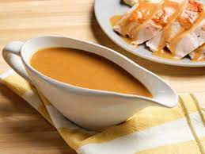

Gravy

Description
This recipe is intended for those who have either followed our Roast Duck recipe
or roasted another meat.
Timing
The timing of this one is simple. Prepare your ingredients,
remove your roast from the oven, and get to work!
Seasoning
The majority of your flavour is going to come from your
roast for this one, the main thing you want to prepare is
a jug of stock.
Ingredients
- 500ml Liquid stock
- Fat from your roast
- 2 Table spoons Plain flour
Steps
- Begin by placing your roasting tin over one or two of your hobs.
- As you heat the fat, add the flour one table spoon at a time.
- Stir in a figure eight pattern until the flour is browned.
- Once browned, pour the stock into the roasting tin.
- Stir until smooth and as thick as you desire.
- Serve and enjoy!